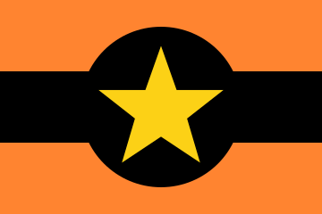

Yakanesia
Bekerja Untuk Negeri!

| Informasi Dasar | |
|---|---|
| Nama: | Republik Sosialis Yakanesia |
| Pemimpin: | Kiki |
| Portait: | N/A |
| Didirikan Pada: | 20 November 2020 |
| Hubungan Internasional | |
| Aliansi: | N/A |
| Data tidak ditemukan! | |
| Ekonomis | |
| Populasi: | 857.930 Jiwa |
| Wilayah: | ± 24,134 KM² |
| Kepadatan Pop Rata-rata: | 35.54/ KM² |
| GDP: | $258,281,103.00 |
| GDP Per Kapita: | $5,689.19 |
| GNI: | $241,585,470.00 |
| Kebijakan Ekonomi: | Jauh Ke Kiri |
| Kurensi: | Rubel |
| Domestik | |
| Bentuk Pemerintahan: | Republik Sosialis |
| Kebijakan Domestik: | N/A |
| Kebijakan Sosial: | Liberal |
| Agama Negara: | Agnostisisme |
| Satwa Nasional: | Kucing |
| Nilai Persetujuan: | 83.6% (83.62) |
| Indeks Polusi: | 66 Poin |
| Indeks Radiasi: | N/A |
| Lagu Kebangsaan: | Luaslah Tanah Airku! |
| Militer | |
| Tentara: | 1.233 Jiwa |
| Tank: | 106 |
| Pesawat Tempur: | 30 |
| Kapal Perang: | 16 |
| Misil: | 2 |
| Senjata Nuklir: | 1 |
Deskripsi
Republik Sosialis Yakanesia adalah sebuah neagar fiksi yang dipimpin oleh Kamerad kiki di benua asia,Pemerintah Republik Sosialis Yakanesia adalah Republik Sosialis,dengan kebijakan sosial yang sangat liberal.
Secara ekonomi,Republik Sosialis Yakanesia lebih menyukai kebijakan sayap kiri,mata uang resminya adalah rubel,Pada usia 448 (per tangggal 11 Febuari 2022),Republik Sosialis Yakenesia adalah negara baru.
Republik Sosialis Yakanesia Memiliki populasi 857.930 Jiwadan luas kurang lebih 24,134 KM²,Memberikan kepadatan penduduk rata-rata 35.54/KM²,Kepercayaan warga dengan Pemerintahan cukup dengan tingkat 83.6 %.
Sejarah
Republik Sosialis Yakanesia Sebelumnya adalah suatu wilayah pada suatu negeri,negara ini terbentuk setelah pecahnya kerusuhan di kota agelesia,lalu mulai memberontak pemerintahan negara tersebut,setelah itu pemerintahan negara tersebut membuat acara negosiasi,dan lalu terbentuklah partai kemerdekaan negara Yakanesia.
pemerintahan negara tersebut ingin kemerdekaan negara Yakanesia dilakukan secara damai,lalu partai kemerdekaan Yakanesia membuat pemilu jima mereka ingi tetap menjadi negara itu atau merdeka.
Hasil pemilu pun di umumkan,bahwa 87.59% Populasi memilih untuk merdeka,dan sisanya tetap,pemerintahan negara itu pun mulai menyiapkan sistem dan pertauran negara Yakanesia.
Geografi & Masyarakat
Republik Sosialis Yakanesia terletak di suatu pulau pada benua asia,mencakupi wilayah ± 24,134 KM²,Negara ini Memiliki Geografi perbukitan,karena adanya dua gunung,dengan banyaknya taman nasional,Dengan Temperatur Rata-rata 24°C hingga 36°C
Memiliki Populasi 857.930 jiwa dengan etnik dominan suku yakanesia,dan minor suku ateletia,Mayoritas Agama di negara ini adalah Agnostisisme.